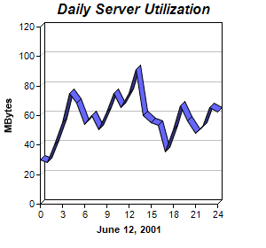

This example demonstrates setting the line to 3D by using Layer.set3D.
ChartDirector 7.1 (C++ Edition)
3D Line Chart
Source Code Listing
#include "chartdir.h"
int main(int argc, char *argv[])
{
// The data for the line chart
double data[] = {30, 28, 40, 55, 75, 68, 54, 60, 50, 62, 75, 65, 75, 91, 60, 55, 53, 35, 50, 66,
56, 48, 52, 65, 62};
const int data_size = (int)(sizeof(data)/sizeof(*data));
// The labels for the line chart
const char* labels[] = {"0", "1", "2", "3", "4", "5", "6", "7", "8", "9", "10", "11", "12",
"13", "14", "15", "16", "17", "18", "19", "20", "21", "22", "23", "24"};
const int labels_size = (int)(sizeof(labels)/sizeof(*labels));
// Create a XYChart object of size 300 x 280 pixels
XYChart* c = new XYChart(300, 280);
// Set the plotarea at (45, 30) and of size 200 x 200 pixels
c->setPlotArea(45, 30, 200, 200);
// Add a title to the chart using 12pt Arial Bold Italic font
c->addTitle("Daily Server Utilization", "Arial Bold Italic", 12);
// Add a title to the y axis
c->yAxis()->setTitle("MBytes");
// Add a title to the x axis
c->xAxis()->setTitle("June 12, 2001");
// Add a blue (0x6666ff) 3D line chart layer using the give data
c->addLineLayer(DoubleArray(data, data_size), 0x6666ff)->set3D();
// Set the labels on the x axis.
c->xAxis()->setLabels(StringArray(labels, labels_size));
// Display 1 out of 3 labels on the x-axis.
c->xAxis()->setLabelStep(3);
// Output the chart
c->makeChart("threedline.png");
//free up resources
delete c;
return 0;
}